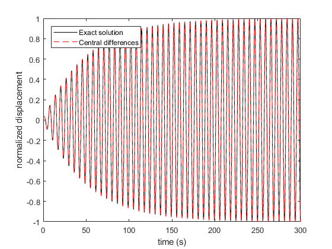
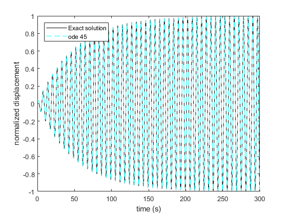
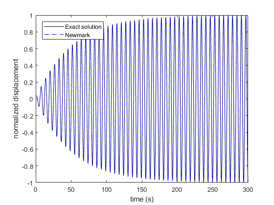
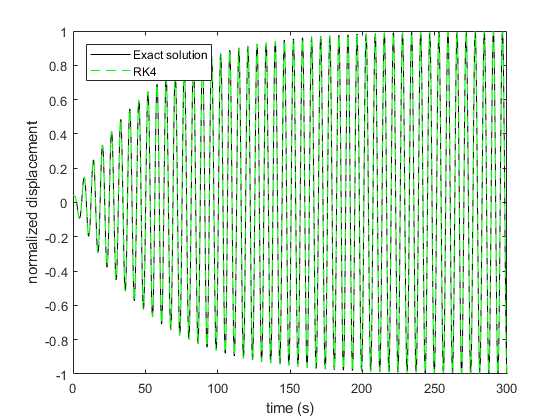

Harmonic excitation of a SDOF
The following example compares different numerical methods to simulate the response of a SDOF subjected to forced harmonic forces in the time domain. The exact solution is in addition used as reference for the comparison.
The numerical methods used here are :
- Central difference method
- ode45 matlab built-in function
- Newmark method
- 4th order Runge-Kutta method
Contents
Initialisation
clearvars;close all;clc; % modal parameters w0 = 1; % eigen-frequency (rad/s) eta = 0.02; % damping ratio wd = w0.*sqrt(1-eta.^2); % damped eigen frequency (rad/s) M = 1; % mass K = w0^2.*M; % stifness C = 2*eta.*M.*w0; % damping
Exact solution
t = linspace(0,300,2000); % time dt = median(diff(t)); % time step F0 = 10; % amplitude of force w = w0; % pulsation of the harmonic force F = F0.*cos(w.*t); % expression of the harmonic force % initial conditions v0 = 0; % no initial speed if F0~=0 % case of forced harmonic vibrations y0 = F0/K; %initial displacement % Cf. book of Daniel J. Inmnan: Engineering Vibrations, for the next few lines X = F0./sqrt((w0.^2-w.^2).^2+(2*eta.*w0*w).^2); theta =atan((2*eta*w0*w)./(w0.^2-w.^2)); PHI = atan(wd.*(y0-X.*cos(theta))./(v0+(y0-X.*cos(theta)).*eta.*w0-w*X*sin(theta))); A = (y0-X.*cos(theta))./sin(PHI); else % case of free vibrations y0 = 1; PHI = atan(wd.*y0./(v0+y0.*eta.*w0)); A = 1/wd.*sqrt((v0+y0.*eta.*w0).^2+y0^2*wd^2); X =0; theta = 0; end % exact solution y1 = A.*exp(-eta.*w0*t).*sin(wd.*t+PHI)+X.*cos(w*t-theta);
Central differences
I am using the book of S. Rao (mechanical vibrations) for this function.
[y2] = CentDiff(F,M,K,C,dt,y0,v0); figure plot(t,y1./max(y1(:)),'k',t,y2./max(y1),'r--') legend('Exact solution','Central differences','location','NorthWest') ylim([-1,1]) xlabel('time (s)') ylabel('normalized displacement'); set(gcf,'color','w')
ODE 45
Matlab built-in function is used here (It is based on state space representation, like the Runge-Kutta method).
dXdT = @(t,x,A,F) A*x + F; [T,y3] = ode45(@(t,x) dXdT(t,x,[0,1;-M\K,-M\C],[0;M\(F0.*cos(w0.*t))]),[t(1),t(end)],[y0;v0]); figure plot(t,y1./max(y1(:)),'k',T,y3(:,1)./max(y1),'c--') legend('Exact solution','ode 45','location','NorthWest') ylim([-1,1]) xlabel('time (s)') ylabel('normalized displacement'); set(gcf,'color','w')
Newmark method
alpha = 1/4 by default beta = 1/2 by default
[y4,~,~] = Newmark(F,M,K,C,dt,y0,v0); figure plot(t,y1./max(y1(:)),'k',t,y4./max(y1),'b--') legend('Exact solution','Newmark','location','NorthWest') ylim([-1,1]) xlabel('time (s)') ylabel('normalized displacement'); set(gcf,'color','w')
4th order Runge-Kutta
Fun = @(t,Y,A,F) A*Y+ F; % -> cf state space model for 2nd Newtown law % function for RG 4: [Y' = AY + F] y5 = zeros(size(t)); clear inputFun Y = [y0,v0]'; for ii=1:numel(t), inputFun.A = [0, 1;-M\K,-M\C]; inputFun.F =[0;M\F(ii)]; inputFun.Y= Y; [Y] = RK4(Fun,t,dt,inputFun); y5(ii) = Y(1); end figure plot(t,y1./max(y1(:)),'k',t,y5./max(y1),'g--') legend('Exact solution','RK4','location','NorthWest') ylim([-1,1]) xlabel('time (s)') ylabel('normalized displacement'); set(gcf,'color','w')